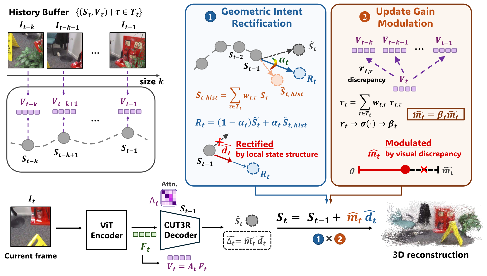

Paper Notes
Problem and State Representation
CUT3R 按帧接收 RGB，通过递归解码器维护 N×C 的潜在状态 S。图像特征与历史状态交互，输出当前几何预测及候选新状态 S̃。长序列的问题不仅是缓存有多大，还包括反复提交候选状态是否积累偏差。HIST3R 将研究对象限定为这一步提交。
已有幅度门控可将增量乘以标量，降低不可靠观察的影响。然而，如果候选变化的方向有偏，减小步长只会缩短同一个偏移。作者因此把 Δ̃=S̃−S_previous 分解为长度 m̃ 与单位方向 d̃。这里的方向位于 C 维特征空间，并非物体运动方向或三维表面法向。
Paper Notes
Reading the Original Pipeline

Kenneth Yang and Yu-Chiang Frank Wang · Original figure, unmodified · CC BY 4.0 · Paper & Caption ↗
图 2 从 CUT3R 产生的候选状态开始。左侧查询有限历史中的状态，形成与当前候选相关的参考；上方修正状态更新方向，下方利用视觉差异确定幅度，最后合并成下一时刻状态。它没有新增语义教师，也没有建立对象级地图。
历史缓冲保存最近 k 个状态以及对应的 token 级视觉摘要。每个 token 都有自己的历史权重和门控，默认 k=8。因此这是固定窗口的额外存储，而不是零开销。缓冲长度固定并不等价于所有任意长序列都有同等精度。
当前帧的几何头读取递归解码器产生的图像特征；纠正后的状态被提交供后续帧使用。按论文前向定义，不能把该修正解释为对当前帧几何重新迭代解码。
Paper Notes
Direction Rectification
对 token i，候选 S̃_t(i) 与每个历史 S_τ(i) 的余弦相似度经过 softmax，得到 w_tτ(i)。历史参考 H_t(i) 是加权状态，而非从历史取一个硬最近邻。此处使用相同 token 索引的状态，不代表这些 token 已有稳定物体身份。
对候选与历史参考的相似度再施加 sigmoid，得到 α。构造端点 R=(1−α)S̃+αH，再将 R−S_previous 归一化为 d̂。重要区别是：R 只用于确定方向，最终提交时仍从原始候选的长度 m̃ 出发，而不是直接把状态替换成 R。
默认 λ_align=2、θ_align=0.94。门控是平滑混合，不是相似度达到阈值就完全采用历史。若候选和历史都缺少正确几何，混合本身不能创造缺失的观测证据。
w_tτ(i) = softmax_τ cos(S̃_t(i), S_τ(i)) H_t(i) = Σ_τ w_tτ(i) S_τ(i) α_t(i) = sigmoid[λ_align (cos(S̃_t(i), H_t(i)) − θ_align)] R_t(i) = (1 − α_t(i)) S̃_t(i) + α_t(i) H_t(i) d̂_t(i) = (R_t(i) − S_previous(i)) / (||R_t(i) − S_previous(i)||₂ + ε)
Paper Notes
Magnitude, Inference, and Cost
视觉摘要 V_t(i)=Σ_j A_t(i,j)F_t(j) 使用第一层 state-to-image attention，把图像 patch 聚合到每个状态 token。相对距离 r_tτ=||V_t−V_τ||/(||V_τ||+ε) 用前面的历史权重汇总为 r_t，再经 β=sigmoid[λ_disc(r_t−θ_disc)] 调节更新长度。视觉变化较大时保留较强更新；相似观察则减少重复写入。
最终 S_t=S_previous+βm̃d̂。为理解分工，可作一个不属于论文实验的二维算例：候选增量为 (3,4)，长度为 5；若历史把方向修正为 (1,0)，幅度门控为 0.4，则实际增量是 (2,0)。仅幅度门控会得到 (1.2,1.6)，仍沿原方向。
主干冻结，无梯度训练或附加 loss。超参数在 ScanNet 训练划分的 30 条序列上选择一次，再固定到各数据集；默认 λ_disc=10、θ_disc=0.24。训练自由不等于没有模型选择。第一层显式取得注意力，其余层继续使用 FlashAttention。论文在 H100 80GB 上测量 50–1000 帧速度和峰值显存，描述开销接近 CUT3R，但图中趋势不应转写为零额外成本。
Paper Notes
Evidence and Controlled Comparisons
Table 1 在 500 帧下报告重建：accuracy 为预测点到真值的距离，completeness 为真值到预测点的距离，均越低越好；normal consistency 越高越好。以下只选均值列，不能与论文中 median 混用。HIST3R 对 TTSA3R 的优势在两个数据集均可见，但 NRGBD 的 accuracy 和法向一致性仍落后于 InfiniteVGGT。
Table 2 的 300 帧组件消融更直接回答机制问题：TUM-Dynamics ATE 从基础版 0.079，变为仅方向 0.032、仅幅度 0.027、两者 0.026。因此不能把完整提升全部归功于新增方向修正；相对幅度单独版本，联合版本的增量较小。附录将方向修正接到 TTSA3R 原门控，1000 帧 ScanNet ATE 从 0.354 降到 0.337，是更有针对性的兼容性证据。
轨迹采用 Sim(3) 对齐，不能据此声称绝对尺度准确；Bonn 深度是 metric evaluation，KITTI 则有序列尺度对齐。不同协议的数值不应直接横比。超参数敏感性表的标准差来自不同门控配置，不是多随机种子重复实验的置信区间。
| Dataset | Method | Accuracy ↓ | Completeness ↓ | Normal Consistency ↑ |
|---|---|---|---|---|
| 7Scenes | TTSA3R | 0.045 | 0.025 | 0.555 |
| 7Scenes | HIST3R | 0.023 | 0.022 | 0.557 |
| NRGBD | TTSA3R | 0.120 | 0.050 | 0.604 |
| NRGBD | HIST3R | 0.092 | 0.033 | 0.610 |
| NRGBD | InfiniteVGGT | 0.070 | 0.037 | 0.641 |
Paper Notes
Limitations and Transfer to Semantic Memory
方法依赖 CUT3R 已经编码的内容。历史相似并不保证几何正确，视觉差异也可能来自光照、遮挡或动态物体，而不是值得写入的新几何。作者关于状态局部平滑结构的可视化支持设计动机，但不是状态流形假设的严格证明。
对 LingBot-Map 的借鉴应停留在接口明确的层面：CUT3R 的递归状态与 LingBot-Map 的特殊 token KV 缓存并非同一种更新机制，不能把上述加法原样作用到任意层 KV 上。我们可以先检测历史形成前的语义融合是否改变后续读取质量，再设计适配该缓存的纠正模块。
最直接的研究问题是：语言对齐特征是否提供了视觉差异之外的可靠更新线索？对照需包括原始更新、纯视觉历史控制、语义控制，并匹配状态预算和新增计算。语义与同一实例身份不能画等号；任何几何改善仍需通过未来帧损失或评测证明。
Paper Notes
Reading Conclusions
本文将历史利用拆成参考方向与更新强度，贡献在于可测试的状态更新操作，而不是扩大模型或增加语言分支。方向消融、端点替换消融和接入已有门控的实验比单个排行榜最优值更有解释力。
对我们的启发是先明确语义将改变哪一个量，再要求相应对照：形成状态、决定保留、还是读取历史。若只增加输出分割，不能用 HIST3R 的结果证明它会改善 memory。论文与官方项目提供了方法证据；本笔记没有独立复现性能。
Discussion
Reading Questions
Does HIST3R use semantic features?
没有。视觉摘要由 CUT3R 图像特征和注意力得到，没有语言对齐或像素语义监督。
Why retain the candidate magnitude?
方向参考和步长控制承担不同职责。先归一化参考方向，再乘原候选长度与 β，可以分别消融；直接采用混合端点同时改变两者。
Can this update be copied into LingBot-Map?
不能直接照搬。需先定位具体层的 KV 写入与历史保留接口，并验证修改是否与其训练和推理定义兼容。
References
- Paper · Version 1 ↗
- Submission History ↗
- Figure License · CC BY 4.0 ↗
- Official Project ↗
- Related Notes · LingBot-Map ↗
First submitted 2026-11-09. Read 2611.12011v1 on 13 November 2026. One original figure is reproduced under CC BY 4.0. Experimental results are reported by the authors and have not been independently reproduced.
Verified on 2026-11-13. Paper results refer to the linked versions. Repository references were checked on this date.